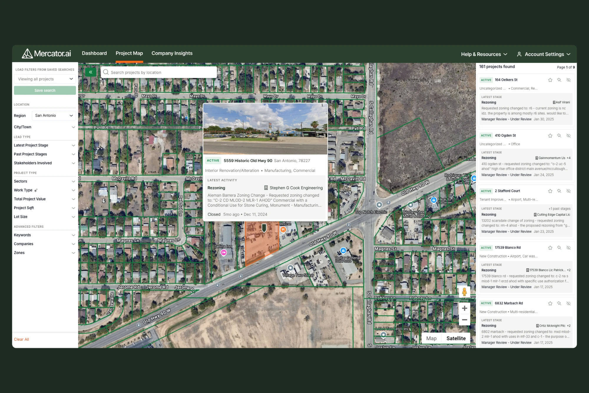

Product Leadership
From MVP to $750K ARR
Mercator.ai helps construction companies find new work early, by surfacing projects in public records long before they go to bid. As Head of Product & Design, I worked closely with the CEO and CTO and a team of 5 engineers.
- Company
- Mercator.ai
- Year
- 2023–2026
- Role
- Head of Product & Design
TL;DR
In three years, I took Mercator.ai from a Canadian MVP with a handful of clients to a US product live in three states, growing from fewer than 10 to more than 60 customers and from $0 to $750K in annual recurring revenue.
My role
I joined Mercator.ai as a Senior Product Designer, and operated in this role during the beta program period. There was no one dedicated to product strategy or day-to-day PM responsibilities, so I naturally took that on as well. I officially moved to the role of Head of Product & Design in Feb 2024. We made the decision to give up Canada for Texas in March 2024.

A promising MVP and a handful of Canadian clients
When I joined, Mercator.ai only operated in Canada. The value prop was clear: find early signals of upcoming construction projects before they reach a bid board, in order to get in early, fill your sales pipeline, and win more work.
We invested in the product before pushing hard on go-to-market to de-risk scaling
Construction business development is very old school. Deals are made on the golf course and networks grow over beers. While clients said they saw value in this new tool, they found it hard to clearly articulate the exact ROI. Onboarding and adoption were a challenge: this is a new way for business developers to operate, so we had to teach and convince them it’s a new, better way of doing things.
Rather than scale sales on an MVP, we chose to improve and de-risk the product first. By the time we leaned into go-to-market, it needed to genuinely solve customers’ problems and be something they’d rely on every day and pay for.
We dedicated our time to learning directly from our customers
We ran a beta program with about 6 clients, structured around giving us dedicated feedback and direct access for research. The goal was to better understand who is using Mercator.ai, how it fits into their workflow, and the gaps that existed in the product, so we’d have a clear product roadmap to work on.
Find, Validate, Pursue
Users have one ultimate goal: fill the sales pipeline. Business development reps are boots on the ground, building relationships to win contracts. Coordinators research new opportunities for them to pursue.
The beta showed us what a rep needs to accomplish before they’d say Mercator.ai did its job:
1. Find — Search and find project leads
Saved searches, map and list views, multi-region search, new search filters.
2. Validate — Confirm the opportunity is viable for them
AI actionable insights, project stages, company stakeholder types, pipeline value.
3. Pursue — Take an action that gets them closer to the decision-maker
Contact search, shared lists, CSV and PDF exports, company tracking.
Before the beta, our roadmap was a list of feature requests. After it, every item had to map to find, validate or pursue, and anything that didn’t was cut. It gave the team a simple test for any idea or request: which goal does it help, and how much?
Find, validate, pursue gave us a simple way to explain what the product is for, which made teaching new users far less work. And features like pipeline value, which totals the value of every project a team is tracking, gave buyers a clear number to point to when explaining ROI.
Data quality sets the ceiling. The next gap wasn’t features, it was data
Once users could find, validate and pursue leads in the product, the next bottleneck was clear. Users can’t find what doesn’t exist in the product, even if UX is perfect.
Mercator.ai’s value comes from its data. The more of it there is, the more value users find, and its quality sets the quality of everything built on top of it. I made deliberate calls not to over-index on features and kept the interface to the minimum viable. Most of my time went into data, with engineering and data acquisition.
We gave up Canada to win Texas
At the same time, we looked at what it would take to scale coverage across Canada. Our core datasets come from individual municipalities, and in Canada that data is fragmented, so getting meaningful coverage was a major challenge. For example, good coverage of the GTA meant pulling data not just from the City of Toronto, but also from Peel, York, and Durham Regions, and more. On top of that, construction companies that work in Toronto rarely stay within the city limits.
Texas offered the opposite. There are more mid-size and large general contractors in Texas alone than in all of Canada, so every data source we added could serve far more customers. Fewer sources, more customers: we could grow revenue without growing our data operation at the same pace. And Texas construction was booming, adding more construction jobs than any other state in 2024.
So we decided to sunset Canada and focus on the US, starting with Texas.
With a new focus on building out data coverage in Texas, my focus was primarily on:
- Finding new sources, one municipality at a time. Records from hundreds of cities and counties vary widely in format and quality, so every new source had to be found and evaluated. I did this with a dedicated junior Data Acquisition teammate and AI search tools.
- Learning how construction works, place by place. Approvals differ between states and municipalities, so we learned each local process before bringing in the data.
- Sequencing sources for speed and coverage. We chose the order to add sources so each market got the most coverage, as fast as possible. I optimized for early stage (the most valuable to our users) and coverage (not all data is at the municipal level; we rejoiced to find state-level or county-level datasets).
- Pipelines built for huge volumes of records. I worked alongside the data engineers to build pipelines that could efficiently process public records from hundreds of sources.

By the end of 2024, we were a Canadian company operating entirely in the US
Letting go of all our Canadian revenue was a daunting leap: we were essentially starting from zero and rebuilding in Texas.
In six months, customers nearly tripled from 14 to 40, weekly active users grew 165%, and 50–70% of customers used Mercator.ai every week.
By the time of my departure in May 2026, we had launched Mercator.ai in 3 states: metro by metro in Texas (Austin, Dallas–Fort Worth, Houston and San Antonio), region by region across Florida, and statewide in Indiana. And we went from fewer than 10 customers to more than 60, and from $0 to $750K in annual recurring revenue.
What I learned
- Find what actually limits users and invest there first. It’s tempting to keep polishing features when growth stalls. At Mercator.ai, the real ceiling was the data underneath them, so I prevented over-indexing on new features, and invested in what actually moved the needle: data.
- Learn from customers with something at stake. Prospects tell you what sounds good. Paying customers tell you what’s missing, because they need the product to work.
None of this would have been possible without the strategic and executional partnership of Stephen Tse, CTO.